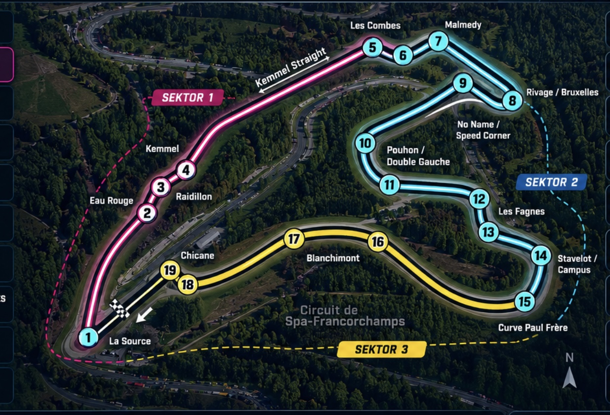

7.004 km · 19 corner points · Pilih selekoh untuk panduan braking, apex dan exit.

Rujukan latihan visual. Titik brek dan racing line perlu diuji dalam GT7; rujukan visual sahaja.
PORSCHE 911 GT3 RS (992) '22
LATIHAN 3 FASA · ① Braking: cari titik brek yang konsisten. ② Apex: kekalkan imbangan dan racing line. ③ Exit: buka throttle secara progresif. Sesuaikan dengan keadaan perlumbaan.